Solids of Revolution by Disks
We can have a function, like this one:

And revolve it around the x-axis like this:
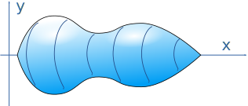
To find its volume we can add up a series of disks:

Each disk's face is a circle:
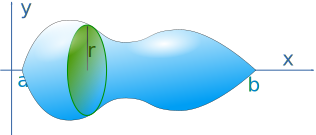
The area of a circle is π times radius squared:
A = π r2
And the radius r is the value of the function at that point f(x), so:
A = π f(x)2
And the volume is found by summing all those disks using Integration:
And that is our formula for Solids of Revolution by Disks
In other words, to find the volume of revolution of a function f(x): integrate pi times the square of the function.
Example: A Cone
Take the very simple function y=x between 0 and b
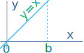
Rotate it around the x-axis ... and we have a cone!
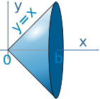
The radius of any disk is the function f(x), which in our case is simply x
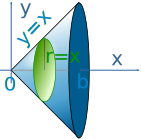
What is its volume? Integrate pi times the square of the function x :
First, let's have our pi outside (yum).
Seriously, it is OK to bring a constant outside the integral:
Using Integration Rules we find the integral of x2 is: x33 + C
To calculate this definite integral, we calculate the value of that function for b and for 0 and subtract, like this:
Volume = π (b33 − 033)
= π b33
Compare that result with the more general volume of a cone:
Volume = 1 3 π r2 h
When both r=b and h=b we get:
Volume = 1 3 π b3
As an interesting exercise, why not try to work out the more general case of any value of r and h yourself?
We can also rotate about other lines, such as x = −1
Example: Our Cone, But About x = −1
So we have this:
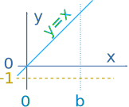
Rotated about x = −1 it looks like this:
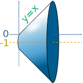
The cone is now bigger, with its sharp end cut off (a truncated cone)
Let's draw in a sample disk so we can work out what to do:
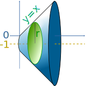
OK. Now what is the radius? It is our function y=x plus an extra 1:
y = x + 1
Then integrate pi times the square of that function:
Pi outside, and expand (x+1)2 to x2+2x+1 :
Using Integration Rules we find the integral of x2+2x+1 is x3/3 + x2 + x + C
And going between 0 and b we get:
Volume = π (b3/3+b2+b − (03/3+02+0))
= π (b3/3+b2+b)
Now for another type of function:
Example: The Square Function
Take y = x2 between x=0.6 and x=1.6
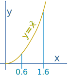
Rotate it around the x-axis:
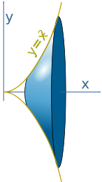
What is its volume? Integrate pi times the square of x2:
Simplify by having pi outside, and also (x2)2 = x4 :
The integral of x4 is x5/5 + C
And going between 0.6 and 1.6 we get:
Volume = π ( 1.65/5 − 0.65/5 )
≈ 6.54
Can you rotate y = x2 about x = −1 ?
In summary:
- Have pi outside
- Integrate the function squared
- Subtract the lower end from the higher end
About The Y Axis
We can also rotate about the Y axis:
Example: The Square Function
Take y=x2, but this time using the y-axis between y=0.4 and y=1.4
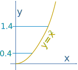
Rotate it around the y-axis:
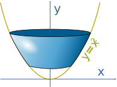
And now we want to integrate in the y direction!
So we want something like x = g(y) instead of y = f(x). In this case it is:
x = √(y)
Now integrate pi times the square of √(y)2 (and dx is now dy):
Simplify with pi outside, and √(y)2 = y :
The integral of y is y2/2
And lastly, going between 0.4 and 1.4 we get:
Volume = π ( 1.42/2 − 0.42/2 )
≈ 2.83...
Washer Method
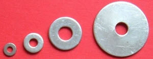
Washers: Disks with Holes
What if we want the volume between two functions?
Example: Volume between the functions y=x and y=x3 from x=0 to 1
These are the functions:
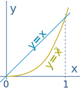
Rotated around the x-axis:
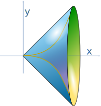
The disks are now "washers":
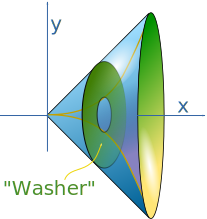
And they have the area of an annulus:

In our case R = x and r = x3
In effect this is the same as the disk method, except we subtract one disk from another.
And so our integration looks like:
Have pi outside (on both functions) and simplify (x3)2 = x6:
The integral of x2 is x3/3 and the integral of x6 is x7/7
And so, going between 0 and 1 we get:
Volume = π [ (13/3 − 17/7 ) − (0−0) ]
≈ 0.598...
So the Washer method is like the Disk method, but with the inner disk subtracted from the outer disk.